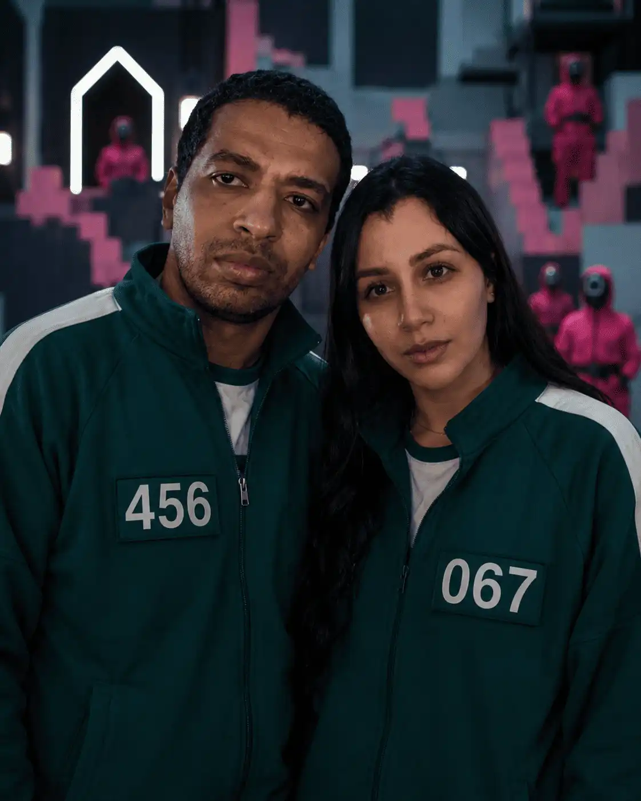
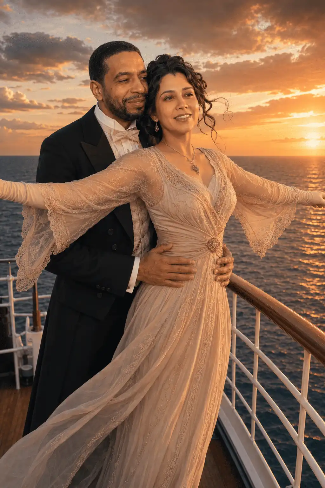
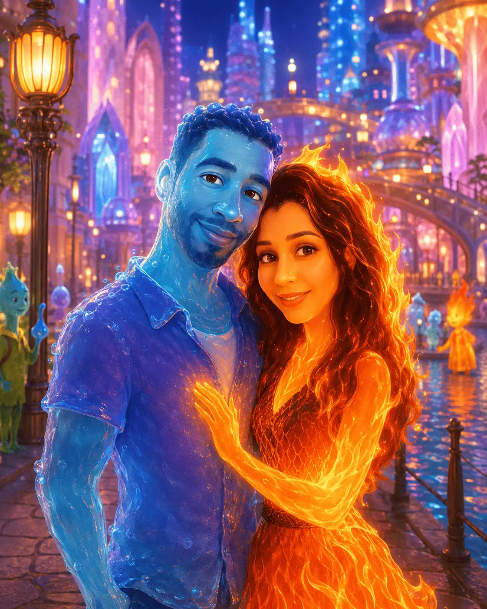

Et si nous nous étions rencontrés…
dans un autre univers, sous d'autres étoiles
Avant de continuer…
Un secret du cœur ouvre cette histoire.
Squid Game
— là où survivre, c'est déjà aimer —
Dans cet arène cruelle où chaque souffle est un pari contre la mort,
nos regards se seraient croisés dans le silence glacé du premier jeu.
j aurais été ton bouclier, et toi ma raison de ne pas lâcher la main.
Oui — nous aurions été ensemble, parce que l'amour naît là où tout finit.

Titanic
— là où l'océan lui-même pleurait nos noms —
Sur ce navire trop grand pour nos destins trop courts, tu m'aurais tendu
la main à la proue, là où le vent efface tout sauf l'essentiel.
Et quand les étoiles auraient sombré avec le navire,
nous aurions refusé que l'eau froide emporte ce que nos cœurs avaient bâti.

The 8 Show
— là où le temps s'achète, mais l'amour se vole —
Dans cette tour absurde où chaque heure a un prix, nous aurions appris
que le seul luxe véritable était le regard de l'autre posé sur soi.
Entre les étages et les jeux cruels, nous nous serions trouvés —
deux complices tendres dans un théâtre de l'absurde, inséparables.
The Queen's Gambit
— là où chaque pièce sacrifiée était un mot d'amour —
Face à l'échiquier, tu aurais deviné mes coups avant que je les pense,
et dans ce silence feutré des tournois, nos âmes se seraient reconnues.
Car l'amour aussi est une partie d'échecs : on avance, on risque,
on sacrifie — et parfois, en perdant la partie, on gagne l'essentiel.
Elemental
— là où le feu et l'eau osèrent se toucher —
Toi, flamme vive — moi, courant d'eau tranquille. Tout nous séparait,
et pourtant chaque fois que nos mondes se frôlaient, quelque chose
de nouveau naissait — ni feu ni eau, mais une lumière tiède, unique.
Nous aurions appris que les contraires ne s'annulent pas —
ils se complètent, et c'est précisément là que l'amour prend racine.

Dans chaque univers, chaque vie, chaque histoire…
nos âmes se seraient toujours retrouvées. ✦